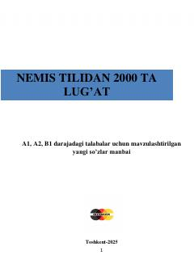

NTNemis tilini o'rganuvchilar uchun 2000 ta eng zarur so'z va iboralar to'plami.
Ushbu kitob nemis tilini o'rganayotgan A1, A2 va B1 darajasidagi talabalar uchun mo'ljallangan mavzulashtirilgan lug'atlar to'plamidir. Qo'llanma kundalik hayotda eng ko'p ishlatiladigan 2000 ta so'z va iboralarni o'z ichiga olib, o'quvchilarga til ko'nikmalarini rivojlantirishda yordam beradi.